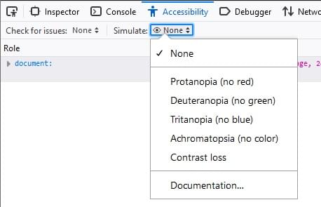
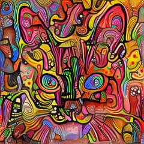
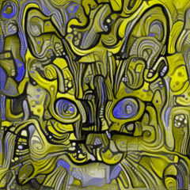
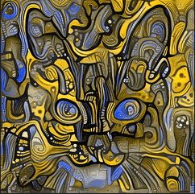
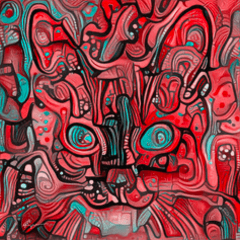
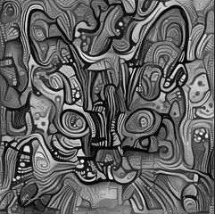
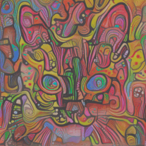

The simulator in the Accessibility Inspector in Firefox Developer Tools lets you see what a web page would look like to users with various forms of color vision deficiency (better known as "color blindness"), as well as contrast sensitivity loss.
"Color blindness" is a bit of a misnomer, since most people with these disorders can see colors, but do not see all of the distinctions that people with normal color vision can see; color vision deficiencies affect perception across the color spectrum, not only of specific colors like red or green. Color vision deficiencies affect about 8% of men, and 0.5% of women. The most common forms of color blindness (commonly lumped together as "red-green color blindness") affect more men than women, because they are due to a mutation in a gene in the X chromosome, which men usually have only one copy of.
Contrast sensitivity loss can be caused by cataracts, glaucoma, diabetic retinopathy, and other disorders of the retina; it can be age-related, congenital, or due to an injury.
This feature depends on webrender, an experimental feature that is not enabled by default on all platforms. You can force-enable webrender by setting the preference gfx.webrender.all to true using the Firefox Configuration Editor (note that if webrender is enabled by default on your platform, the setting has no effect.
The current color simulation option may be selected from the Simulate menu as shown.

The following table shows a colorful image of a cat's face, and what it looks like in the each of the simulations.
| Simulation | Image displayed |
|---|---|
| None (Choose this to return to normal display) |
 |
| Protanopia (no red) |  |
| Deuteranopia (no green) |  |
| Tritanopia (no blue) |  |
| Achromatopsia (no color) |  |
| Contrast loss |
 |
The simulation transformation matrices are based on the paper: A Physiologically-based Model for Simulation of Color Vision Deficiency, Gustavo M. Machado, Manuel M. Oliveira Leandro A. F. Fernandes, IEEE Transactions on Visualization and Computer Graphics, Volume 15 (2009).
Firefox 81 removed unnecessary simulations for protanomaly, deuteranomaly, and tritanomaly, and added a simulation for achromatopsia (no color).